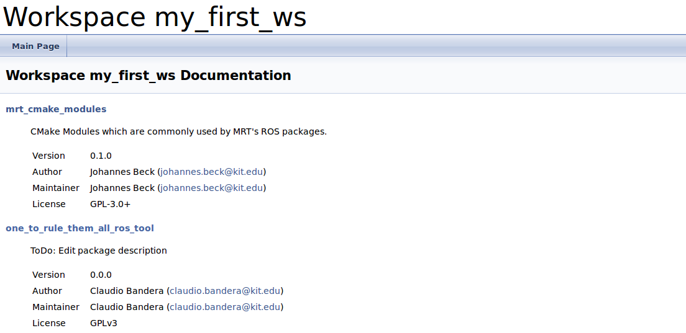
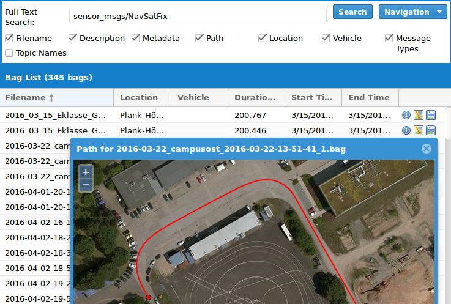
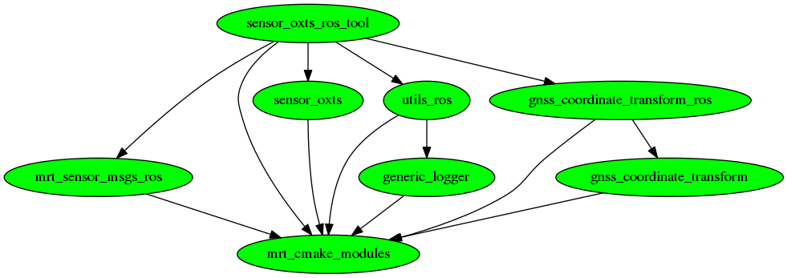

<!DOCTYPE html>
<html>
  <head>
    <title>ROS @MRT</title>
    <meta charset="utf-8">
    <style>
      @import url(http://fonts.googleapis.com/css?family=Droid+Serif);
      @import url(http://fonts.googleapis.com/css?family=Yanone+Kaffeesatz);
      @import url(http://fonts.googleapis.com/css?family=Ubuntu+Mono:400,700,400italic);

      body {
        font-family: 'Droid Serif';
      }
      h1, h2, h3 {
        font-family: 'Yanone Kaffeesatz';
        font-weight: 400;
        margin-bottom: 0;
      }
      .remark-slide-content h1 { font-size: 3em; }
      .remark-slide-content h2 { font-size: 2em; }
      .remark-slide-content h3 { font-size: 1.6em; }
      .footnote {
        position: absolute;
        bottom: 3em;
      }
      li p { line-height: 1.25em; }
      .red { color: #fa0000; }
      .large { font-size: 2em; }
      a, a > code {
        color: rgb(249, 38, 114);
        text-decoration: none;
      }
      code {
        -moz-border-radius: 5px;
        -web-border-radius: 5px;
        background: #e7e8e2;
        border-radius: 5px;
      }
      .remark-code, .remark-inline-code { font-family: 'Ubuntu Mono'; }
      .remark-code-line-highlighted     { background-color: #373832; }
      .pull-left {
        float: left;
        width: 47%;
      }
      .pull-right {
        float: right;
        width: 47%;
      }
      .pull-right ~ p {
        clear: both;
      }
      #slideshow .slide .content code {
        font-size: 0.8em;
      }
      #slideshow .slide .content pre code {
        font-size: 0.9em;
        padding: 15px;
      }
      .inverse {
        background: #272822;
        color: #777872;
        text-shadow: 0 0 20px #333;
      }
      .inverse h1, .inverse h2 {
        color: #f3f3f3;
        line-height: 0.8em;
      }

      /* Slide-specific styling */
      #slide-inverse .footnote {
        bottom: 12px;
        left: 20px;
      }
      #slide-how .slides {
        font-size: 0.9em;
        position: absolute;
        top:  151px;
        right: 140px;
      }
      #slide-how .slides h3 {
        margin-top: 0.2em;
      }
      #slide-how .slides .first, #slide-how .slides .second {
        padding: 1px 20px;
        height: 90px;
        width: 120px;
        -moz-box-shadow: 0 0 10px #777;
        -webkit-box-shadow: 0 0 10px #777;
        box-shadow: 0 0 10px #777;
      }
      #slide-how .slides .first {
        background: #fff;
        position: absolute;
        top: 20%;
        left: 20%;
        z-index: 1;
      }
      #slide-how .slides .second {
        position: relative;
        background: #fff;
        z-index: 0;
      }

      /* Two-column layout */
      .left-column {
        color: #777;
        width: 20%;
        height: 92%;
        float: left;
      }
        .left-column h2:last-of-type, .left-column h3:last-child {
          color: #000;
        }
      .right-column {
        width: 75%;
        float: right;
        padding-top: 1em;
      }
    @page {
        size: 1210px 681px;
        margin: 0;
    }

    @media print {
      .remark-slide-scaler {
        width: 100% !important;
        height: 100% !important;
        transform: scale(1) !important;
        top: 0 !important;
        left: 0 !important;
      }
    }
    </style>

    <textarea style="display: none;" id="source">
name: inverse
layout: true
class: center, middle, inverse

---

# Advanced code juggling @MRT
## Claudio Bandera

Or how the MRT tools can ease your everyday life

---

layout: false


## Agenda
- What are they?

- How do I use them?
        
- Getting code and creating code
        
- Building, Documenting and Testing
        
- Data preservation
        
- Housekeeping
        
 - Cleaning your workspace
 - Inspection dependencies
 - Updating packages

---
## What are the MRT Tools?
Collection of command line tools, written in Python:
```shell
> mrt
```
### What are they useful for?
- Working with a big codebase
- Interacting with gitlab
- Saving time on creating new code
- Automating reoccuring tasks

### Which tools does it use under the hood?

- cmake
- catkin
- wstool
- gitlab-api
- docker
- doxygen
- rosbag

---

## Finding help

```shell
> mrt pkg create --help

Usage: mrt pkg create [OPTIONS] PKG_NAME

  This is a package creation wizard, to help creating new catkin packages.
  You can specify whether to create a library or executable, ROS or non-ROS
  package and whether to create a Gitlab repo. Appropriate template files
  and directory tree are created. When creating the repo you can choose the
  namespace. The repo name is tested for conformity with the guidelines and
  conflicts with rosdep packages are avoided.

Options:
  -t [lib|exec]  Type: Choose between library or executable
  -r             Make ROS package
  -g             Create Git repository
  --help         Show this message and exit.
```

--

### Autocompletion *(Now even for zsh!)*
```shell
> mrt pkg add sensor_[tab tab]
sensor_camera                        sensor-ibeo
sensor_camera_demo_tool              sensor_ibeo_demo_ros
sensor_camera_ros_tool               sensor_ibeo_feature_fusion_tool
sensor_ibeo                          sensor_ibeo_live_viewer_tool
...
```

---


## Overview of commands
```shell
Commands:
  catkin       A wrapper for catkin.
  check        Test code in clean environment
  doc          Build and show the documentation of a package.
  gitlab       Gitlab related tools
  maintenance  Repair tools...
  pkg          Package related tasks...
  rosbag       A wrapper for rosbag.
  snapshot     Save or restore the current state of the...
  ws           A collection of tools to perform on a catkin...
  wstool       A wrapper for wstool.
```

### Go out and explore!
Meanwhile there are about 47 nested commands (tendency rising)
---

template: inverse

# Getting started
### An easy exercise...

---

## Creating a workspace
- All workspace relevant commands are nested under `mrt ws`
```shell
> mrt ws init my_first_ws
Creating workspace
Initializing catkin workspace in `/home/bandera/my_first_ws`.
...
> cd my_first_ws
```
--
- Start by adding a package to your ws with  `mrt pkg`
```shell
> mrt pkg add sensor_oxts_ros_tool
Search for package sensor_oxts_ros_tool
Found MRT/sensor_oxts_ros_tool
Cloning into '/home/bandera/my_first_ws/src/sensor_oxts_ros_tool'...
Resolving dependencies...
...
```
--
- Inspect your ws
```shell
> mrt ws info
 sensor_oxts                     git master  (-)    7b3dad5a5a5c gitlab.mrt.uni-karlsruhe.de/MRT/sensor_oxts.git
 generic_logger                  git master  (-)    143fb9fd368d gitlab.mrt.uni-karlsruhe.de/MRT/generic_logger.git
 gnss_coordinate_transform       git master  (-)    56212d685f3f gitlab.mrt.uni-karlsruhe.de/MRT/gnss_coordinate_transform.git
 utils_ros                       git master  (-)    524bb2f34e18 gitlab.mrt.uni-karlsruhe.de/MRT/utils_ros.git
 gnss_coordinate_transform_ros   git master  (-)    9fee0a9409b7 gitlab.mrt.uni-karlsruhe.de/MRT/gnss_coordinate_transform_ros.git
...
```

---
## Build
- `mrt catkin` is a wrapper around `catkin` with additional options
 - `-rd`        Check and resolve dependencies before building workspace.
 - `--eclipse`  Create a eclipse project.
 - `--verbose`  Compile in *very* verbose mode.
 - `--force-cmake`  Force cmake to be run again (Helpful if new executables were created).
 - `-c`         Continue with other packages upon failure.

--

- Default settings will be set by mrt tools (Defaults can be altered with `mrt maintenance settings`)
 - Build in release mode (can be adjusted with `--debug`, `--release`)
 - Build with compiler warnings enabled  (can be adjusted with `--warnings`, `--no-warnings`)
--

- Remove all compiled code
 - `mrt ws clean`

---
## Build Errors
- If you get errors during compilation: **READ THEM**

--


--

- In this case the dependency `sensor_oxts` is missing. Try any of these to install them:
            > mrt ws resolve_deps
            > mrt catkin build -rd
---

template: inverse

# Going further
### Create your own code

---
## Create a package
- You can easily setup new packages
```shell
> mrt pkg create -g -r -t exec one_to_rule_them_all
Creating package with name.... one_to_rule_them_all_ros_tool
     --> Package type.... exec
     --> Create ROS Package.... YES
     --> Create  gitlab repository.... YES
     --> Package Maintainer.... Claudio Bandera <claudio.bandera@kit.edu>
```
--
And what you get:
```shell
> tree .
├── CMakeLists.txt
├── launch
│   └── params
├── package.xml
├── README.md
├── res
├── src
└── test
.    └── test_one_to_rule_them_all_ros_tool.cpp
```
---
## Creating a new ROS executable

```shell
> mrt pkg create_executable Ring_keeper
Do you need tf conversions? [y/N]: y
Do you need diagnostics? [y/N]: n
```
--
Using `mrt pkg create_executable` will:
- Add necessary dependencies to `package.xml`
- Add the following files:
        
```shell
.
├── src
│   └── ring_keeper
│       ├── ring_keeper.cpp             # <- Implementation Class
│       ├── ring_keeper.hpp             # <- Implementation Class Header
│       ├── ring_keeper_node.cpp        # <- Node Wrapper
│       └── ring_keeper_nodelet.cpp     # <- Nodelet Wrapper
├── launch
│   ├── params
│   │   └── ring_keeper_parameters.yaml # <- File for non-default params
│   ├── ring_keeper_node.launch         # <- Node launchfile
│   └── ring_keeper_nodelet.launch      # <- Nodelet launchfile
├── cfg
│   └── RingKeeper.mrtcfg               # <- MRT Parameter file
└── nodelet_plugins.xml             # <- Declaration of nodelet plugins
```
        
---

## Create your documentation
```shell
> mrt doc build one_to_rule_them_all_ros_tool
> mrt doc show
```
--
- This will compile all Doxygen comments in your code with default settings and display a workspace landing page.



---

## Test your code
- Write tests and run them! *(There is already a demo test file in your pkg)*
```shell
> mrt catkin run_tests
```
--
- Test whether it will compile in a clean environment:
```shell
> mrt check pkg one_to_rule_them_all_ros_tool
```
--
 - This will ssh into the mrtknecht,
 - start up a fresh docker container with a fresh & clean install
 - create a new workspace
 - clone your package
 - resolve dependencies
 - and compile it.

---

## Collaborate
- Easily add students to your repositories
```shell
> mrt gitlab permissions add_user
```

---

template: inverse

# Preserve Data
### Or how to find those rosbags again

---

## Record Rosbags
- Use the mrt wrapper for recording rosbags:
```shell
> mrt rosbag record -o MyFirstRosbag /chatter
```
- This will prompt your for more information about
 - Vehicle
 - Location
 - Sensors
 - Description

- This metadata is stored inside the bagfile

---

## Find Rosbags
- Go to [http://rosbag/](http://rosbag/) to search existing recordings



---

## Save Demos
- Make Snapshots of succesfull demos
```shell
> mrt snapshot create MyFirstDemo
Wrote snapshot to /home/bandera/my_first_ws/MyFirstDemo_160721.snapshot
```
--
- So they can be reproduced
```shell
> mrt snapshot restore MyFirstDemo_160721.snapshot
...
```

---

template: inverse

# Housekeeping
### Or how to handle ALL those repos

---

## Handling many packages at once

- Thankfully, there exist some tools to get an insight of whats going on:

 - See branch, unpushed commits, modified [and untracked] files
            mrt ws info [-u]
--
 - Perform a `git status` in every repo.
            mrt ws status
--
 - Perform a `git pull` in every repo.
            mrt ws update
--
 - Perform anything in every repo
            mrt wstool foreach 'touch claudio_was_here.txt'

---

## Inspect dependencies #1

Long dependency chains can get confusing at times, try these:
--
        
- List dependencies
```shell
> mrt pkg deps show sensor_oxts_ros_tool
Gitlab dependencies
===================
gnss_coordinate_transform
utils_ros
sensor_oxts
generic_logger
mrt_sensor_msgs_ros
gnss_coordinate_transform_ros
mrt_cmake_modules
_
Apt-get dependencies
====================
message_runtime
catkin
roscpp
std_msgs
roslib
sensor_msgs
eigen_conversions
diagnostic_updater
gtest
geometry_msgs
...
```
---

## Inspect dependencies #2
Long dependency chains can get confusing at times, try these:

- Draw dependency tree
            > mrt pkg deps draw sensor_oxts_ros_tool --repos-only


---

## Inspect dependencies #3
Long dependency chains can get confusing at times, try these:

- Lookup reverse dependencies
```shell
> mrt pkg deps rlookup sensor_oxts_ros_tool
I found the following packages relying on sensor_oxts_ros_tool:
-
MRT/vehicle_config_files:
	- On branch 'demo_follow_ibeo_object': [u'depend']
	- On branch 'gcdc': [u'depend']
	- On branch 'devel_sahin': [u'depend']
MRT/control_reference_ros_tool:
	- On branch 'master': [u'build_depend', u'exec_depend']
gcdc/gpsd_ros_tool:
	- On branch 'master': [u'depend']
```
---

## Cleaning up

- Try to keep your workspaces small (if possible)
        
--
        
- Remove packages (safely) if not needed.
```shell
> mrt pkg remove sensor_oxts_ros_tool
You have the following uncommited changes:
sensor_oxts_ros_tool
 M      sensor_oxts_ros_tool/README.md
Are you sure you want to continue? [y/N]:
```
        
--
        
- Try to find packages that are no longer needed:
```shell
> mrt ws tidy
Package sensor_oxts_ros_tool has no parents. Delete? [y/N]: y
Removing sensor_oxts_ros_tool
```

---

## Maintenance

- All persistent settings and cache files lie in `~/.mrtgitlab`

- Check out the configuration options you have:
```shell
> mrt maintenance settings
```

--
        
- Delete or change your saved credentials
```shell
> mrt maintenance credentials
```

--
        
- Find more (experimental) commands under "maintenance":
 - credentials       
 - rename_pkg        
 - settings          
 - update_cached_deps
 - update_cmakelists
 - update_repo_cache        
 - update_rosinstall        
 - update_url_in_package_xml

        
---

template: inverse

# Behind the scenes
### Or how you can help yourself

---

## The codebase

- All code located in `mrt_build` repo.
- Python module `mrt_tools` contains all code
 - Dependencies are listed in requirements.txt
 - Use `setup.py` to install
 - Use `tox` to run tests
- Tools get installed into own virtualenv, see [documentation in repo](https://gitlab.mrt.uni-karlsruhe.de/MRT/mrt_build/blob/master/doc/SetupDevelopment.md).

## Adding new commands

- Library is written with the help of [click](http://click.pocoo.org/5/)
- To add a custom command:
 - create a new file starting with `mrt_` in the commands folder.
 - Use decorator to define new command:

```python
@click.command()
@click.option('--count', default=1, help='Number of greetings.')
@click.option('--name', prompt='Your name',
              help='The person to greet.')
def hello(count, name):
    """Simple program that greets NAME for a total of COUNT times."""
    for x in range(count):
        click.echo('Hello %s!' % name)
```
---

## Credentials

- User credentials can be stored in several different places:
 - Gnome Keyring
 - Encoded File
 - Only in memory
- Additionally, git credentials can be passed to `git-credentials-cache`
```shell
>mrt maintenance credentials show
Gitlab credentials
==================
(Current setting: 'GnomeCredentialManager')
Username: bandera
Password: ******
Token   : xxxxxxxxxxxxxxxxxxxxxx
-
Git credentials
==================
user.name    : Claudio Bandera
user.email   : claudio.bandera@kit.edu
cached creds.: Yes
```

```
</textarea>
<script src="https://gnab.github.io/remark/downloads/remark-latest.min.js"></script>
<script type="text/javascript">  var hljs = remark.highlighter.engine; </script>
<script>
hljs.registerLanguage('shell', function () {
  return {
    contains: [
      {
        className: 'keyword',
        begin: '\\$+[^\n#]+',
      },
      {
        className: 'comment',
        begin: '#+[^\n]+',
      },
      {
        className: 'comment',
        begin: '#',
      },
      {
        className: 'literal',
        begin: '\\{\\{', end: '\\}\\}'
      }
    ]
  };
});
</script>
<script>  var slideshow = remark.create({highlightStyle: 'sunburst'}) ; </script>
</body>
</html>
